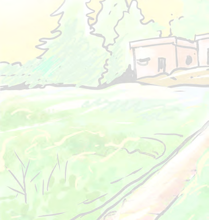
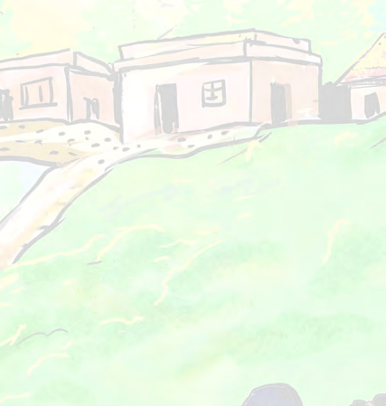
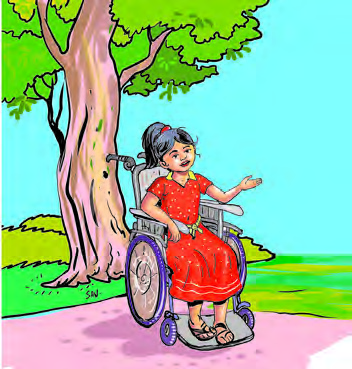
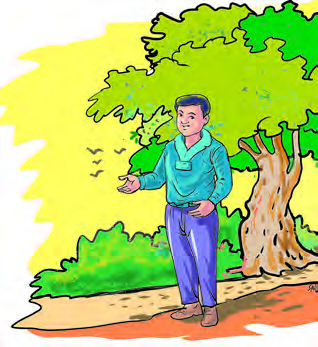
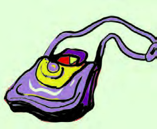
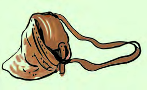
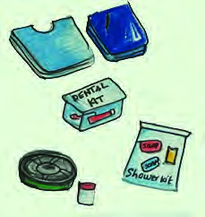
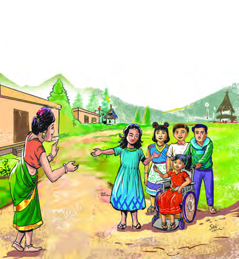

Page 1
Page 2
Page 3


Page 4
Page 5
പ്രവർത്തനം
ചർă െചƭാം
ചിത്രേശഖരണം
േചാദയ്ം
നിർƣിക്കാം
വായിക്കാം
തുട ർ വായന
(വിലയിരുĹലിന് വിേധയമാേÚĬതിƼ)
െകാളാഷ്
തുടർപ്രവർത്തനങ്ങൾ
നിറം നൽകാം
പാട്ട് പാടാം
കളിക്കാം
എഴുതാം
വരƩാം
േറാൾേപല്
പല്ക്കാർഡ് നിർമാണം
ഐ.സി.ടി
1. പീലിയുെട ഗ്രാമം. . . . . . . . . . . . . . . . . . . . . . . 7 - 26
2. ഭക്ഷണവും മനുഷയ്രും. . . . . . . . . . . . . . . . . . 27 - 39
3. െതാഴിൽ ൈവവിധയ്ങ്ങൾ . . . . . . . . . . . . . . . . 40 - 49
4. വȼത്തിെൻ്റ നാൾവഴികൾ . . . . . . . . . . . . . . . 50 - 65
5. വരƩാം വായിക്കാം . . . . . . . . . . . . . . . . . . . . 66 - 83
6. ജനങ്ങൾ ജനങ്ങളാൽ. . . . . . . . . . . . . . . . . . . 84 - 96
ഉǬടÚം
ഉǬടÚം
ഈ പുǙകĹിൽ പഠനസൗകരDzĹിനായി
ചില ചിǥāൾ ഉപേയാഗിăിരിÚുųു.
Page 6
Page 7
Page 8
Page 9


Page 10
Page 11
Page 12



Page 13

Page 14
Page 15

Page 16
Page 17

Page 18

Page 19


Page 20